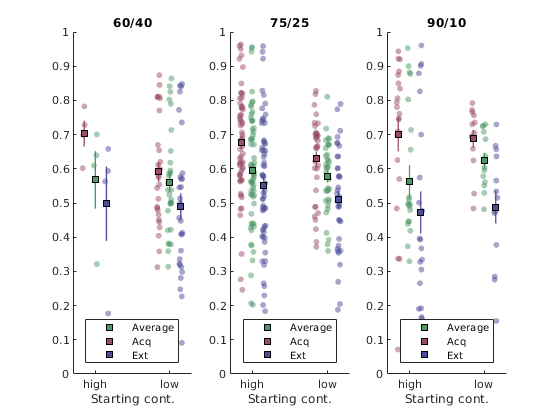
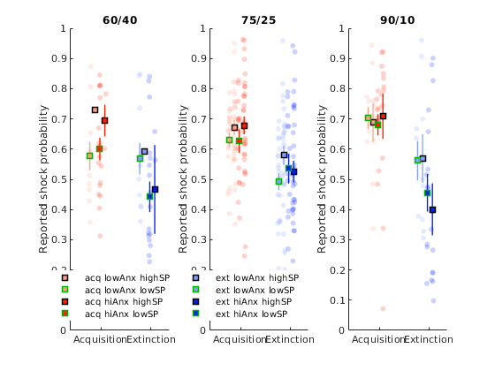

Starting contingency analysis¶
addpath('/data/drive/DPhil/THESIS/Cross_study_analyses/learning-repo/scripts')
% load all data sets!
comp='onx';ca=1; pX_analysis_init;
% filter the data
% specify what data to EXCLUDE (this should be a json structure, but
% matlab...
pX_subject_filter;
[SData] = pX_filter_data(sp, 'pX', 1);
subIDs = cellstr(SData.specID);
% It's possible to do the entire analyses using model-generated data
% data_type = 'real_data', 'RW_3_mle_n20', 'betaStSw_v2g_c_mle_n20',
% 'RW_6_volatility_mle_n20'
data = pX_build_dataset(subIDs, SData, 'real_data',1);
ans =
'9.6.0.1099231 (R2019a) Update 1'
Running with visit 1 from Losartan!
Raw participants: 116
Excluded for missing anxiety scores:
'ss11'
'ss31'
Participans after anx exlc.: 114
Excluded for failure to distinguish harm from safe:
'f27'
'm01'
'm06'
'm29'
'm39'
'pl16'
'pl20'
'ss18'
'ss19'
'ss7'
Participans after dist exlc.: 104
pl9 ... excluding for misunderstanding the task
ss8_bl7525 ... excluding for missing more than 50% of data
ss4_bl6040 ... excluding for missing more than 50% of data
m01_v1 ... excluding for missing more than 50% of data
m13_v1 ... excluding for missing more than 50% of data
f39_v1 ... excluding for missing more than 50% of data
f38_v1 ... excluding for missing more than 50% of data
Participans after all exlc.: 98
Loading pre-computed data structure
without anxiety¶
dloc = data(data.half==2 & data.Trial_Type==3 & data.phase~=0,:);
[GS, Gkey, S, Skey, mle] = pX_get_stats(dloc, dloc.prob, {'startprob', 'contingency'});
[GS, Gkey, S_p, Skey_p, mle] = pX_get_stats(dloc, dloc.prob, {'startprob', 'contingency', 'study_str', 'phase_str', 'id'});
%[GS_m, Gkey_m, S_m, Skey_m, mle] = pX_get_stats(dloc, fitted(m1), {'order_str', 'contingency'});
ostr = unique(Gkey.startprob);
cstr = unique(Gkey.contingency);
f=figure;
cf=struct;
cf.opacity =0.5;
cf.legendmark_2 = 'on';
for b = 1:numel(cstr)
subplot(1,3,b)
for or = 1:numel(ostr)
if or == 1; cf.legendmark_2='on'; else cf.legendmark_2='off';end
id = find( ismember(Skey.startprob,ostr{or}) & ismember(Skey.contingency, cstr{b}) );
plot_vertical_jittered_column(or, S(id), [0.3 0.6 0.4], cf)
id_a = find(ismember(Skey_p.phase_str, 'acq') & ismember(Skey_p.startprob,ostr{or}) & ismember(Skey_p.contingency, cstr{b}) );
plot_vertical_jittered_column(or-0.15, S_p(id_a), [0.6 0.3 0.4], cf)
id_b = find(ismember(Skey_p.phase_str, 'ext') & ismember(Skey_p.startprob,ostr{or}) & ismember(Skey_p.contingency, cstr{b}) );
plot_vertical_jittered_column(or+0.15, S_p(id_b), [0.3 0.3 0.6], cf)
legend('Average', 'Acq', 'Ext', 'location', 'south');
end
t=gca; t.XTick=1:3; t.XTickLabel=ostr;
xlabel('Starting cont.');
ylim([0 1]); xlim([0.7 2.3]);
title(cstr{b});
end
f.Position(3) = 600;
f.Position(4) = 280;

Skey_p.prob = S_p;
cf= [];
cf.bycat=1;
cf.cat ={'study_str'};
[m] = pX_report_stats( Skey_p, 'prob', {'startprob', 'contingency', 'study_str', 'phase_str'}, {}, cf);
running normal GLM wihtout random effects
=====MAIN MODEL=====
mm =
Linear regression model:
prob ~ [Linear formula with 16 terms in 4 predictors]
Estimated Coefficients:
Estimate SE tStat pValue
_________ ________ ________ _________
(Intercept) 0.6832 0.042013 16.262 8.766e-43
startprob_low -0.075529 0.059415 -1.2712 0.20467
contingency_60/40 0.051225 0.096263 0.53213 0.59504
contingency_90/10 0.048137 0.053261 0.9038 0.36684
study_str_study_1 0.013851 0.057911 0.23917 0.81114
study_str_study_3 -0.031489 0.055578 -0.56657 0.57144
phase_str_ext -0.13232 0.059415 -2.227 0.026707
startprob_low:contingency_60/40 0 0 NaN NaN
startprob_low:contingency_90/10 0.028763 0.093866 0.30643 0.7595
startprob_low:study_str_study_1 0.07728 0.095342 0.81055 0.41828
startprob_low:study_str_study_3 0.034388 0.091565 0.37556 0.70751
contingency_60/40:study_str_study_1 0 0 NaN NaN
contingency_90/10:study_str_study_1 0 0 NaN NaN
contingency_60/40:study_str_study_3 0 0 NaN NaN
contingency_90/10:study_str_study_3 0 0 NaN NaN
startprob_low:phase_str_ext 0.037469 0.084026 0.44592 0.65599
contingency_60/40:phase_str_ext -0.060279 0.13614 -0.44278 0.65825
contingency_90/10:phase_str_ext -0.082518 0.075322 -1.0955 0.27419
study_str_study_1:phase_str_ext 0.037847 0.081898 0.46212 0.64434
study_str_study_3:phase_str_ext -0.012464 0.078599 -0.15858 0.87411
startprob_low:contingency_60/40:study_str_study_1 0 0 NaN NaN
startprob_low:contingency_90/10:study_str_study_1 0 0 NaN NaN
startprob_low:contingency_60/40:study_str_study_3 -0.070573 0.11787 -0.59875 0.5498
startprob_low:contingency_90/10:study_str_study_3 0 0 NaN NaN
startprob_low:contingency_60/40:phase_str_ext 0.11011 0.16669 0.66058 0.5094
startprob_low:contingency_90/10:phase_str_ext 0.034298 0.13275 0.25837 0.7963
startprob_low:study_str_study_1:phase_str_ext -0.082423 0.13483 -0.61129 0.54148
startprob_low:study_str_study_3:phase_str_ext -0.043899 0.12949 -0.33901 0.73485
contingency_60/40:study_str_study_1:phase_str_ext 0 0 NaN NaN
contingency_90/10:study_str_study_1:phase_str_ext 0 0 NaN NaN
contingency_60/40:study_str_study_3:phase_str_ext 0 0 NaN NaN
contingency_90/10:study_str_study_3:phase_str_ext 0 0 NaN NaN
startprob_low:contingency_60/40:study_str_study_1:phase_str_ext 0 0 NaN NaN
startprob_low:contingency_90/10:study_str_study_1:phase_str_ext 0 0 NaN NaN
startprob_low:contingency_60/40:study_str_study_3:phase_str_ext 0 0 NaN NaN
startprob_low:contingency_90/10:study_str_study_3:phase_str_ext 0 0 NaN NaN
Number of observations: 328, Error degrees of freedom: 308
Root Mean Squared Error: 0.178
R-squared: 0.185, Adjusted R-Squared: 0.134
F-statistic vs. constant model: 3.67, p-value = 7.19e-07
ans =
16x5 table
SumSq DF MeanSq F pValue
_________ ___ _________ _______ __________
startprob 0.076189 1 0.076189 2.398 0.12251
contingency 0.024844 2 0.012422 0.39099 0.67672
study_str 0.1815 2 0.090749 2.8563 0.059003
phase_str 1.6207 1 1.6207 51.01 6.6573e-12
startprob:contingency 0.024636 2 0.012318 0.38771 0.67894
startprob:study_str 0.0091162 2 0.0045581 0.14347 0.86641
contingency:study_str 0 0 NaN NaN NaN
startprob:phase_str 0.0059816 1 0.0059816 0.18827 0.66466
contingency:phase_str 0.069654 2 0.034827 1.0962 0.33545
study_str:phase_str 0.013888 2 0.006944 0.21856 0.8038
startprob:contingency:study_str 0 0 NaN NaN NaN
startprob:contingency:phase_str 0.013903 2 0.0069514 0.21879 0.80361
startprob:study_str:phase_str 0.012192 2 0.0060962 0.19188 0.82551
contingency:study_str:phase_str 0 0 NaN NaN NaN
startprob:contingency:study_str:phase_str 0 0 NaN NaN NaN
Error 9.7856 308 0.031771
=====POST-HOC: study_str:study_1=====
m =
Linear regression model:
prob ~ [Linear formula with 8 terms in 3 predictors]
Estimated Coefficients:
Estimate SE tStat pValue
_________ ________ ________ __________
(Intercept) 0.69706 0.022771 30.612 6.2074e-35
phase_str_ext -0.094473 0.032202 -2.9337 0.0049732
startprob_low 0.0017511 0.0426 0.041107 0.96737
phase_str_ext:startprob_low -0.044955 0.060245 -0.74619 0.45891
Number of observations: 56, Error degrees of freedom: 52
Root Mean Squared Error: 0.102
R-squared: 0.242, Adjusted R-Squared: 0.198
F-statistic vs. constant model: 5.53, p-value = 0.00227
==================================================
=====POST-HOC: study_str:study_2=====
m =
Linear regression model:
prob ~ [Linear formula with 8 terms in 3 predictors]
Estimated Coefficients:
Estimate SE tStat pValue
_________ ________ _______ __________
(Intercept) 0.6832 0.036553 18.691 1.6971e-28
phase_str_ext -0.13232 0.051693 -2.5597 0.012704
startprob_low -0.075529 0.051693 -1.4611 0.14859
phase_str_ext:startprob_low 0.037469 0.073105 0.51253 0.60994
Number of observations: 72, Error degrees of freedom: 68
Root Mean Squared Error: 0.155
R-squared: 0.154, Adjusted R-Squared: 0.116
F-statistic vs. constant model: 4.11, p-value = 0.00968
==================================================
=====POST-HOC: study_str:study_3=====
m =
Linear regression model:
prob ~ [Linear formula with 8 terms in 3 predictors]
Estimated Coefficients:
Estimate SE tStat pValue
_________ ________ ________ __________
(Intercept) 0.59123 0.037363 15.824 2.0874e-36
contingency_75/25 0.019347 0.076774 0.25201 0.80131
contingency_90/10 0.096248 0.067158 1.4332 0.15347
phase_str_ext -0.10138 0.052839 -1.9187 0.056537
startprob_high 0.11171 0.10732 1.041 0.29923
contingency_75/25:phase_str_ext -0.049831 0.10857 -0.45896 0.64679
contingency_90/10:phase_str_ext -0.098051 0.094975 -1.0324 0.30322
contingency_75/25:startprob_high -0.070573 0.13305 -0.53043 0.59644
contingency_90/10:startprob_high -0.099336 0.12868 -0.77195 0.44111
phase_str_ext:startprob_high -0.10368 0.15177 -0.68314 0.49536
contingency_75/25:phase_str_ext:startprob_high 0.11011 0.18816 0.5852 0.55912
contingency_90/10:phase_str_ext:startprob_high 0.075812 0.18198 0.41659 0.67745
Number of observations: 200, Error degrees of freedom: 188
Root Mean Squared Error: 0.201
R-squared: 0.164, Adjusted R-Squared: 0.115
F-statistic vs. constant model: 3.35, p-value = 0.00031
==================================================
with anxiety¶
dloc = data(data.half==2 & data.Trial_Type==3 & data.phase~=0,:);
[GS, Gkey, S, Skey, mle] = pX_get_stats(dloc, dloc.prob, {'startprob', 'contingency', 'tabin', 'phase'});
spstr = unique(Skey.startprob);
blocks = {'60/40', '75/25', '90/10'};
f=figure;
cf=struct;
anxstr = {'lowAnx', 'hiAnx'};
phstr ={'acq', 'ext'};
cf.legendmark_2 = 'on';
bcol = [0 0 0; 0 0.7 0];
for b =1:3
subplot(1,3,b);
i=1;
for ph = 1:2
for an = 1:2
for sp = 1:length(spstr)
idx = (ph-1)*2+an;
id = find( Skey.tabin==an & Skey.phase==ph & ismember(Skey.startprob, spstr{sp}) & ismember(Skey.contingency, blocks{b}) );
cf.marker_edge = bcol(sp,:);
cf.marker_width = 1.5;
plot_vertical_jittered_column(ph+(an-1)*0.2-0.1*(sp-1), S(id), col4(idx,:), cf);
labels{i} = [phstr{ph} ' ' anxstr{an} ' ' spstr{sp} 'SP'];
i = i+1;
end
end
end
if b == 2
l=legend(labels, 'location', 'south');
l.NumColumns=2;
l.EdgeColor=[1 1 1];set(l,'EdgeColor','none');
end
ylim([0 1]); xlim([0.5 2.5]);
t=gca; t.XTick = [1.125,2.125]; t.XTickLabels = {'Acquisition', 'Extinction'};
title(cstr{b});
f.Position(3) =400;
ylim([0 1]);
ylabel('Reported shock probability')
end
f.Position(3) = 700;
f.Position(4) = 280;

NaNsin the results below occur because only study III has all three contingency levels
%STATS
[GS, Gkey, S, Skey, mle] = pX_get_stats(dloc, dloc.prob, {'startprob', 'contingency', 'study_str', 'ta', 'phase_str'});
Skey.prob = S;
cf= [];
cf.bycat=1;
cf.cat ={'study_str'};
[m] = pX_report_stats( Skey, 'prob', {'startprob', 'contingency', 'ta', 'study_str', 'phase_str'}, {}, cf);
running normal GLM wihtout random effects
=====MAIN MODEL=====
mm =
Linear regression model:
prob ~ [Linear formula with 32 terms in 5 predictors]
Estimated Coefficients:
Estimate SE tStat pValue
__________ _________ _________ _________
(Intercept) 0.54593 0.1928 2.8316 0.0050003
startprob_low 0.32044 0.30561 1.0485 0.29538
contingency_60/40 0.3515 0.7309 0.48091 0.63099
contingency_90/10 -0.10831 0.19695 -0.54991 0.58286
ta 0.0037782 0.0051794 0.72946 0.46638
study_str_study_1 0.20536 0.24127 0.85117 0.39547
study_str_study_3 0.10519 0.2382 0.44162 0.65914
phase_str_ext -0.21653 0.27266 -0.79414 0.42785
startprob_low:contingency_60/40 0 0 NaN NaN
startprob_low:contingency_90/10 0.54745 0.41888 1.307 0.1924
startprob_low:ta -0.011488 0.0086716 -1.3247 0.18644
contingency_60/40:ta -0.0065644 0.01588 -0.41337 0.67968
contingency_90/10:ta 0.0038476 0.0045602 0.84374 0.3996
startprob_low:study_str_study_1 -0.39579 0.39734 -0.99611 0.32014
startprob_low:study_str_study_3 -0.68156 0.45362 -1.5025 0.1342
contingency_60/40:study_str_study_1 0 0 NaN NaN
contingency_90/10:study_str_study_1 0 0 NaN NaN
contingency_60/40:study_str_study_3 0 0 NaN NaN
contingency_90/10:study_str_study_3 0 0 NaN NaN
ta:study_str_study_1 -0.0051452 0.0062599 -0.82193 0.41188
ta:study_str_study_3 -0.0037642 0.0060752 -0.61961 0.53607
startprob_low:phase_str_ext -0.18268 0.43219 -0.42268 0.67288
contingency_60/40:phase_str_ext 0 0 NaN NaN
contingency_90/10:phase_str_ext 0 0 NaN NaN
ta:phase_str_ext 0.0023178 0.0073248 0.31643 0.75193
study_str_study_1:phase_str_ext 0.26505 0.34121 0.7768 0.43799
study_str_study_3:phase_str_ext 0.23045 0.33686 0.68411 0.49452
startprob_low:contingency_60/40:ta -0.0010981 0.017943 -0.061203 0.95125
startprob_low:contingency_90/10:ta -0.013281 0.010353 -1.2828 0.20073
startprob_low:contingency_60/40:study_str_study_1 0 0 NaN NaN
startprob_low:contingency_90/10:study_str_study_1 0 0 NaN NaN
startprob_low:contingency_60/40:study_str_study_3 -0.080572 0.80103 -0.10058 0.91996
startprob_low:contingency_90/10:study_str_study_3 0 0 NaN NaN
startprob_low:ta:study_str_study_1 0.013393 0.01046 1.2803 0.20158
startprob_low:ta:study_str_study_3 0.019885 0.012114 1.6415 0.10193
contingency_60/40:ta:study_str_study_1 0 0 NaN NaN
contingency_90/10:ta:study_str_study_1 0 0 NaN NaN
contingency_60/40:ta:study_str_study_3 0 0 NaN NaN
contingency_90/10:ta:study_str_study_3 0 0 NaN NaN
startprob_low:contingency_60/40:phase_str_ext -0.42184 1.1328 -0.37238 0.70992
startprob_low:contingency_90/10:phase_str_ext -0.32812 0.59238 -0.5539 0.58013
startprob_low:ta:phase_str_ext 0.0067526 0.012263 0.55063 0.58237
contingency_60/40:ta:phase_str_ext -0.012244 0.022458 -0.5452 0.58609
contingency_90/10:ta:phase_str_ext -0.0079374 0.0064491 -1.2308 0.21953
startprob_low:study_str_study_1:phase_str_ext 0.03436 0.56192 0.061147 0.95129
startprob_low:study_str_study_3:phase_str_ext 0.20234 0.64152 0.31541 0.7527
contingency_60/40:study_str_study_1:phase_str_ext 0 0 NaN NaN
contingency_90/10:study_str_study_1:phase_str_ext 0 0 NaN NaN
contingency_60/40:study_str_study_3:phase_str_ext 0.51186 1.0337 0.49519 0.62089
contingency_90/10:study_str_study_3:phase_str_ext 0.23328 0.27853 0.83752 0.40308
ta:study_str_study_1:phase_str_ext -0.0059218 0.0088529 -0.66892 0.50415
ta:study_str_study_3:phase_str_ext -0.0060482 0.0085916 -0.70397 0.48209
startprob_low:contingency_60/40:ta:study_str_study_1 0 0 NaN NaN
startprob_low:contingency_90/10:ta:study_str_study_1 0 0 NaN NaN
startprob_low:contingency_60/40:ta:study_str_study_3 0 0 NaN NaN
startprob_low:contingency_90/10:ta:study_str_study_3 0 0 NaN NaN
startprob_low:contingency_60/40:ta:phase_str_ext 0 0 NaN NaN
startprob_low:contingency_90/10:ta:phase_str_ext 0 0 NaN NaN
startprob_low:contingency_60/40:study_str_study_1:phase_str_ext 0 0 NaN NaN
startprob_low:contingency_90/10:study_str_study_1:phase_str_ext 0 0 NaN NaN
startprob_low:contingency_60/40:study_str_study_3:phase_str_ext 0 0 NaN NaN
startprob_low:contingency_90/10:study_str_study_3:phase_str_ext 0 0 NaN NaN
startprob_low:ta:study_str_study_1:phase_str_ext -0.0040809 0.014793 -0.27586 0.78287
startprob_low:ta:study_str_study_3:phase_str_ext -0.007871 0.017132 -0.45942 0.64632
contingency_60/40:ta:study_str_study_1:phase_str_ext 0 0 NaN NaN
contingency_90/10:ta:study_str_study_1:phase_str_ext 0 0 NaN NaN
contingency_60/40:ta:study_str_study_3:phase_str_ext 0 0 NaN NaN
contingency_90/10:ta:study_str_study_3:phase_str_ext 0 0 NaN NaN
startprob_low:contingency_60/40:ta:study_str_study_1:phase_str_ext 0 0 NaN NaN
startprob_low:contingency_90/10:ta:study_str_study_1:phase_str_ext 0 0 NaN NaN
startprob_low:contingency_60/40:ta:study_str_study_3:phase_str_ext 0.011531 0.025375 0.45442 0.64991
startprob_low:contingency_90/10:ta:study_str_study_3:phase_str_ext 0.0093972 0.014642 0.6418 0.52158
Number of observations: 328, Error degrees of freedom: 288
Root Mean Squared Error: 0.178
R-squared: 0.24, Adjusted R-Squared: 0.137
F-statistic vs. constant model: 2.34, p-value = 3.77e-05
ans =
32x5 table
SumSq DF MeanSq F pValue
__________ ___ _________ ________ __________
startprob 0.070711 1 0.070711 2.2338 0.13612
contingency 0.020412 2 0.010206 0.32241 0.72467
ta 0.076189 1 0.076189 2.4068 0.12191
study_str 0.16355 2 0.081775 2.5833 0.077274
phase_str 1.6207 1 1.6207 51.197 6.9473e-12
startprob:contingency 0.039681 2 0.019841 0.62677 0.53504
startprob:ta 0.011248 1 0.011248 0.35533 0.55158
contingency:ta 0.036029 2 0.018014 0.56908 0.56668
startprob:study_str 0.0053049 2 0.0026525 0.083792 0.91965
contingency:study_str 5.715e-33 0 Inf Inf NaN
ta:study_str 0.041803 2 0.020902 0.66029 0.51748
startprob:phase_str 0.004829 1 0.004829 0.15255 0.6964
contingency:phase_str 0.085543 2 0.042772 1.3512 0.26058
ta:phase_str 0.17329 1 0.17329 5.4743 0.019981
study_str:phase_str 0.0093201 2 0.0046601 0.14721 0.86318
startprob:contingency:ta 0.068469 2 0.034234 1.0815 0.34047
startprob:contingency:study_str 8.7908e-36 0 Inf Inf NaN
startprob:ta:study_str 0.11878 2 0.059388 1.8761 0.15506
contingency:ta:study_str 2.0526e-32 0 Inf Inf NaN
startprob:contingency:phase_str 0.0044356 2 0.0022178 0.070061 0.93235
startprob:ta:phase_str 0.032462 1 0.032462 1.0255 0.31207
contingency:ta:phase_str 0.040089 2 0.020045 0.63321 0.53162
startprob:study_str:phase_str 0.021627 2 0.010813 0.3416 0.71092
contingency:study_str:phase_str 0 0 NaN NaN NaN
ta:study_str:phase_str 0.043646 2 0.021823 0.6894 0.50271
startprob:contingency:ta:study_str 0 0 NaN NaN NaN
startprob:contingency:ta:phase_str 0.014635 2 0.0073173 0.23115 0.79376
startprob:contingency:study_str:phase_str 0 0 NaN NaN NaN
startprob:ta:study_str:phase_str 0.006682 2 0.003341 0.10554 0.89987
contingency:ta:study_str:phase_str 0 0 NaN NaN NaN
startprob:contingency:ta:study_str:phase_str 0 0 NaN NaN NaN
Error 9.1167 288 0.031655
=====POST-HOC: study_str:study_1=====
m =
Linear regression model:
prob ~ [Linear formula with 16 terms in 4 predictors]
Estimated Coefficients:
Estimate SE tStat pValue
_________ _________ ________ __________
(Intercept) 0.75129 0.080715 9.308 2.5107e-12
phase_str_ext 0.048517 0.11415 0.42504 0.67271
startprob_low -0.075354 0.14131 -0.53326 0.59631
ta -0.001367 0.0019564 -0.69874 0.48809
phase_str_ext:startprob_low -0.14832 0.19984 -0.7422 0.46158
phase_str_ext:ta -0.003604 0.0027667 -1.3026 0.19892
startprob_low:ta 0.0019051 0.0032553 0.58523 0.56114
phase_str_ext:startprob_low:ta 0.0026717 0.0046037 0.58033 0.5644
Number of observations: 56, Error degrees of freedom: 48
Root Mean Squared Error: 0.099
R-squared: 0.338, Adjusted R-Squared: 0.242
F-statistic vs. constant model: 3.51, p-value = 0.00406
==================================================
=====POST-HOC: study_str:study_2=====
m =
Linear regression model:
prob ~ [Linear formula with 16 terms in 4 predictors]
Estimated Coefficients:
Estimate SE tStat pValue
_________ _________ ________ _________
(Intercept) 0.54593 0.1678 3.2534 0.0018224
phase_str_ext -0.21653 0.23731 -0.91247 0.36495
startprob_low 0.32044 0.26598 1.2048 0.23273
ta 0.0037782 0.0045078 0.83815 0.40506
phase_str_ext:startprob_low -0.18268 0.37615 -0.48566 0.62887
phase_str_ext:ta 0.0023178 0.006375 0.36358 0.71737
startprob_low:ta -0.011488 0.0075471 -1.5221 0.1329
phase_str_ext:startprob_low:ta 0.0067526 0.010673 0.63267 0.5292
Number of observations: 72, Error degrees of freedom: 64
Root Mean Squared Error: 0.155
R-squared: 0.206, Adjusted R-Squared: 0.119
F-statistic vs. constant model: 2.37, p-value = 0.0324
==================================================
=====POST-HOC: study_str:study_3=====
m =
Linear regression model:
prob ~ [Linear formula with 16 terms in 4 predictors]
Estimated Coefficients:
Estimate SE tStat pValue
__________ _________ _________ __________
(Intercept) 0.56093 0.13659 4.1066 6.1403e-05
contingency_75/25 -0.27093 0.37031 -0.73162 0.46537
contingency_90/10 0.16822 0.2732 0.61573 0.53887
phase_str_ext 0.1236 0.19317 0.63983 0.52311
startprob_high 0.44169 0.82195 0.53737 0.59169
ta 0.000749 0.0032485 0.23057 0.81792
contingency_75/25:phase_str_ext -0.090019 0.5237 -0.17189 0.86372
contingency_90/10:phase_str_ext -0.18486 0.38636 -0.47848 0.63291
contingency_75/25:startprob_high -0.080572 0.90501 -0.089028 0.92916
contingency_90/10:startprob_high -0.62802 0.86955 -0.72224 0.47111
phase_str_ext:startprob_high 0.40218 1.1624 0.34599 0.72977
contingency_75/25:ta 0.0076626 0.0094356 0.81209 0.41783
contingency_90/10:ta -0.0017712 0.0065086 -0.27213 0.78584
phase_str_ext:ta -0.0055622 0.004594 -1.2107 0.22762
startprob_high:ta -0.0072994 0.017877 -0.40831 0.68354
contingency_75/25:phase_str_ext:startprob_high -0.42184 1.2799 -0.32959 0.7421
contingency_90/10:phase_str_ext:startprob_high -0.093722 1.2297 -0.076213 0.93934
contingency_75/25:phase_str_ext:ta 0.00071337 0.013344 0.053461 0.95743
contingency_90/10:phase_str_ext:ta 0.0021731 0.0092045 0.2361 0.81363
contingency_75/25:startprob_high:ta -0.0010981 0.020272 -0.054171 0.95686
contingency_90/10:startprob_high:ta 0.012183 0.019107 0.63763 0.52454
phase_str_ext:startprob_high:ta -0.010412 0.025282 -0.41185 0.68095
contingency_75/25:phase_str_ext:startprob_high:ta 0.011531 0.028668 0.40221 0.68802
contingency_90/10:phase_str_ext:startprob_high:ta 0.0021336 0.027021 0.07896 0.93715
Number of observations: 200, Error degrees of freedom: 176
Root Mean Squared Error: 0.201
R-squared: 0.219, Adjusted R-Squared: 0.117
F-statistic vs. constant model: 2.14, p-value = 0.00305
==================================================